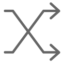
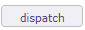

Tickets¶
A ticket is a kind of task that cannot be scheduled in a unitary manner.
This is usually a short-lived activity for a single ticket that gives feedback to the issuer or to keep track of the result.

Tickets management screen¶
It can be globally planned as a general activity, but not unitarily.
For instance, bugs should be managed through tickets :
You can not plan bugs before they are registered.
You must be able to give a feedback on each bug.
You can (or at least should) globally plan bug fixing activity.
Tickets (simple)
This screen is a limited version of screen “Tickets”.
It’s dedicated to users who want to create and follow their own tickets without be involved in their treatment.
When fields and features are available, the description is similar.
Restrict the entry of real work in the ticket
Possibility to define that only the responsible of ticket can enter real work.
This behavior can be set in Global parameters screen.
Due dates
Initial and planned due date allows to define a target date for solving the ticket.
Initial due date
If a definition of ticket delay exists for giving ticket type and urgency the date is automatically calculated with this delay.
Delays for tickets screen allows to define ticket delay.
Note
Initial due date of the ticket set as read only if it is calculated from the setting of “delays for tickets”
Planned due date
Is used to define a target date after evaluation.
Automatically initialized to the initial due date.
Monitoring indicator
Possibility to define indicators to follow the respect of dates values.
- Respect of initial due date/time
- Respect of planned due date/time
Product, component and versions fields
Allows to identify the product and component relating to the issue.
Identifies from which versions, the issue occurs and to which versions a resolution will be applied.
Versions identified
A ticket can identify all versions allocated.
Possibility to define a main version and the other versions allocated.
See: Product concept.
Responsible of product
A responsible can be defined for a product or component.
If a product or component is selected, the responsible defined can be automatically assigned to the ticket.
Note
Ticket responsible from product responsible
This parameter, in Global parameters, allows to define, if the defined responsible is automatically assigned to the ticket.
See: Global Parameters
Section Description
Field |
Description |
|---|---|
Unique Id for the ticket. |
|
|
Short description of the ticket. |
|
Type of ticket. |
|
The project concerned by the ticket. |
External reference of the ticket. |
|
Urgency |
Urgency for treatment of the ticket, as requested by the issuer. |
Contact at the origin of the ticket. |
|
Element which is the origin of the ticket. |
|
Duplicate ticket |
Link to another ticket, to link duplicate tickets. |
Context |
List of 3 items describing the context of the ticket. |
Product |
The product for which this ticket has been identified. |
Component |
The component for which this ticket has been identified. |
Original product version |
Product versions for which the issue has been identified. |
Original comp. version |
Component versions for which the issue has been identified. |
Complete description of the ticket. |

Field Context
Contexts are initialized for IT Projects as “Environment”, “OS” and “Browser”.
This can be easily changed values in Contexts screen.
Product or component
List of values contains the products and components linked the selected project.
Fields: Original product version & Original comp. version
The list of values will be filtered depends on the selected value in fields “Product and component”.
Click on
 to add a other version, see Multi-version selection.
to add a other version, see Multi-version selection.
Section Treatment
Field |
Description |
|---|---|
Planning activity |
Activity where global work for this kind of ticket is planned. |
|
Actual status of the ticket. |
Resolution |
Ticket resolution. |
Regression |
Notion of regression can be added. |
Resource who is responsible for the ticket. |
|
Criticality |
Importance of impact on the system, as determined after analysis. |
Priority |
Priority of treatment. |
Initial due date |
Initial target date for solving the ticket. |
Planned due date |
Actual target date for solving the ticket. |
Estimated work |
Estimated workload needed to treat the ticket. |
Real work |
Real workload spent to treat the ticket. |
Left work |
Left workload needed to finish the ticket. Automatically calculated as Estimated – Real Set to zero when ticket is done |
Box checked indicates the ticket is taken over. |
|
Box checked indicates the ticket has been treated. |
|
Solved |
Box checked indicates the ticket has been solved. |
Box checked indicates the ticket is archived. |
|
Solved |
The box is automatically checked or unchecked, according to the resolution selected |
Cancelled |
Box checked indicates the ticket is cancelled. |
Target product version |
Product versions for which a resolution of issue will be delivered. |
Target comp. version |
Component versions for which a resolution of issue will be delivered. |
Complete description of the resolution of the ticket. |
Note
Priority
Automatically calculated from Urgency and Criticality values.
Can be changed manually.
Note
Target product version & Target comp. version
The list of values will be filtered depends on the selected value in fields “Product and component”.
Click on
to add a other version, see Multi-version selection.
Button Start/End work
The start Work / Stop Work button is a clock on / off timer.
If the logged in user is a resource, he or she has the option to start working on the ticket.
Click the “Start work” button to start timing the processing time on the ticket.
The start time is then displayed under the button and the button changes name.
Once the work is done, press the “stop work” button.
The spend time will automatically be converted as real work.
It’ll be transferred on planning activity if it is set.
A decrease in “left work” on activity will be carried out.
if the ticket goes into a paused state then the work started with the start work button will be stopped.
Important
Closing the application or starting work on another ticket will automatically stop the current ongoing work.
Button Dispatch
This button allows to dispatch ticket.
Click on
to add a line.
Button Show periods
You can calculate the time spent between the start of processing, which corresponds to the receipt of the ticket and the end of processing of a ticket, that is to say when it goes to the done state, with the possibility of subtracting waiting periods thanks to the “paused” state macro.
The passages from an active macro-state to a non-active macro-state (paused or done), are recorded thanks to the start and end dates of each period. This table is updated automatically with calculation of the duration in working hours and the duration in calendar hours when the end date of the period is entered.
Status period¶
Planning activity¶
Planning activity field allows to link the ticket with a planning activity.
If the global parameter limit Planning Activity to those with flag is set to yes then:
You must check the “Planning activity” box on the activity to be linked.
It will then be visible in the planning activities list of your ticket.
Work on the ticket will be included in this activity.
After saving the option, new fields are displayed.
You can see the number of tickets linked to this activity and time information corresponding to all of these tickets.

New fields displayed after saving the Planning activity option¶
Click on
 to open a popup which will display the details of these tickets.
to open a popup which will display the details of these tickets.
List of tickets linked to the activity¶
Real work
Put the real work from tickets to the resource timesheet.
When a resource has entered the real work on the ticket and the ticket is linked to a planning activity.
The resource is automatically assigned to this activity.
Real work set on tickets is automatically set in resource timesheet.

Imputations real work on related tickets.¶
The tickets are very dependent on the planning activity.
The time indicated by the resources will be decremented to that planned for the activity.
Multi-version selection¶
In the version fields, it’s possible to set several versions.
Main and other version
The version with smaller id will appear in the select list and is considered as the main version.
Other versions are listed above.
It is possible to set an ‘other’ version as the main version using the button .
{kind=link}
{kind=link}
Priority value calculation¶
Priority value is automatically calculated from Urgency and Criticality values.
Priority, Urgency and Criticality values are defined in lists of values screens. See: Priorities, Urgencies and Criticalities screens.
In the previous screens, a name of value is set with numeric value.
Priority numeric value is determined by a simple equation as follows:
Equation
[Priority value] = [Urgency value] X [Criticality value] / 2
For example:
Blocking (4) X Critical (8) / 2 = Critical priority (16)for [Priority value]
Default values
Default values are determined.
You can change its values while respecting the equation defined above.
Receive tickets from emails¶
ProjeQtOr offers to save tickets from e-mail directly in the application.
Receive email from ticket screen¶
Description section
This section allows you to enter the parameters of your mailbox.
Field |
Description |
|---|---|
Unique Id for the ticket. |
|
|
Short description of the ticket. |
|
name of the project to which the ticket is attached. |
|
Name of your IMAP host. |
|
Mail of the IMAP user. |
|
IMAP user account password entered. |
You can create a new mailbox for tickets on each project and for each type of ticket configured in ProjeQtOr.
IMAP Host
The address must be an IMAP connection string.
Example to connect to the GMAIL input area, the host must be
{imap.gmail.com:143}INBOX
No protocol is required
Security constraints
Mails from any source (may lead to spam Allow you to receive emails from anyone and therefore can cause spam
Only mails from known users Can only receive emails saved in your ProjeQtOr application
Only mails from known users allocated to the project Only allows you to receive emails saved in your ProjeQtOr application and which are assigned to the project selected in the settings of your mailbox
Include attachments Indicates whether or not you allow your users to attach attachments.
Allow up to maximum weight allowed for receiving emails.
Warning
Maximum weight
There is no weight limit in ProjeQtOr but probably your mail server.
Most of the time emails are blocked beyond 5 to 10 MB
Description treatment
Field |
Description |
|---|---|
|
Type of ticket for which emails will be sent. |
Responsible |
Name of the person who will work on the default ticket. |
Planning activity |
Name of the planning activity on which the tickets will be decremented. The parent activity must belong to the same project. |
|
Maximum number of emails per hour allowed. |
Last input date |
Date of last ticket received |
Last input ticket |
Display the name of the last ticket received |
Total input tickets |
Total number of the tickets since the mailbox creation |
Warning
Cron must be launched for tickets to be processed in ProjeQtOr. If you do not receive a ticket, try to stop the cron so that it can restart with a refresh of the code.
Some fields can be decisive for the reception of your emails.
Limit of tickets / hour
This limit allows you to restrict the reception of emails by hour.
If the number of tickets received is much higher than your limitation then the probability of spam is to be considered or you have incorrectly evaluated the number of tickets to be processed.
When the maximum number of tickets is reached then the mailbox freezes
Only manual intervention by the administrator can unlock it
Its role will consist in reassessing the number of tickets to allow their receipt
If the maximum number of tickets per hour has been reached then you have a rejection message on the history line: rejected ticket: ticket limit per hour
History of ticket created
You can choose the number of tickets to display in the history by filling in the “history to display” field
Field |
Description |
|---|---|
|
address of the ticket sender |
Date |
date of receipt of the ticket |
Result |
Indicates whether the ticket has been processed or rejected |
Replies from Email
The processing of incoming mailboxes is adapted to simplify their use. The use of the mailbox for new tickets is the same for replies.
The reference of the element from which the email is sent is added in the subject of the email.
In the procedure for determining the origin of an incoming email, ProjeQtOr searches for the reference in the subject of the email.
If it is not found, ProjeQtOr considers it a new request to be integrated as a new ticket.
If the reference is found in the subject of the incoming email, then the reply is inserted on the element, like a note.
Management of processed emails
In the global parameters you can determine, upon receipt of the email, whether you want to mark it as read or delete it.
Management of tokens on ticket¶
You can define and integrate tokens on tickets that you can track on your customer contracts.
The use of this feature is configurable and must be activated in the modules management to have access to it.
A new screen for the definition of tokens will be accessible via the financial part incomes menu.
Token definition¶
The objective is to define all types of tokens likely to be ordered by your client.
Token definition screen¶
You set values for a token.
Duration
Value of the token in days or hours (depending on the time recording unit in global parameters)
Amount
Monetary value of the token in € (depending on the currency recording unit in global parameters)
Splittable token
Defines if the token can be divisible, if half tokens can be entered
Surcharge situations
Enter situations of increase that may apply to tokens, such as night work, or even during days normally not worked
Warning
When a token has been used on a ticket, it becomes impossible to modify it.
Similarly, it is not possible to delete or modify the coefficient for a mark-up situation used on a line of work
Token on the client contract¶
On the client contract, we will add a table with order management functions.
Click on
to add tokens to the order
Add work token command¶
Select the token type from those defined on the project or its parent projects.
Entering the ordered quantity of tokens
Added a descriptive comment
Management of ordered tokens¶
When you have entered the order, the table will indicate:
In the tokens ordered section
The type of tokens ordered and its description
The total amount of tokens ordered
the total duration to which the number of tokens corresponds
The total amount to which the number of tokens ordered corresponds
In the tokens used part
The total number of tokens used without surcharges
The total number of tokens used with markup
the total duration of the tokens used with and without surcharges
The total cost of tokens used taking into account markups
In the remaining tokens part
Display of the remaining duration of the tokens (duration ordered - duration used)
Display of the number of remaining tokens (amount ordered - amount used)
The Total Line, sums the numbers, amounts and durations (ordered, completed, remaining) for all types of tokens in the contract
Token on tickets¶
When you create a ticket on the project where the tokens have been defined then you will be able to select these tokens when dispatching the job.
Dispatch work with selection of tokens¶
Click on  to open the pop-up.
The start date and time are automatically filled in with the current dates and times.
Select the resource working on the ticket
Add the workload for this ticket
Select the token corresponding to the need of the ticket
Determine if a markup type applies to this ticket
The quantity of tokens (without decimal if the token is not divisible)
The mark-up rule, to be chosen from the rules defined on the token
The number of increased tokens calculated by applying the increase rule
If the billable box is checked then the tokens will not be counted on the customer contract.
Warning
The “Mark-up situations” are descriptive and may or may not be related to the time of execution. There will therefore be no automatic determination of the increase situation according to the day or time of the entry of the time spent.
synchronize an activity and a ticket¶
You can sync tickets with activities. So when you enable this option, all tickets are synced like this:
We attach the activity as a planning activity of the ticket
We link the activity with the ticket
The ticket is entered as the origin of the activity
We modify the state of the element which has the least advanced state to pass it to the state of its binomial (the most advanced).
The other data is not synchronized (a gap may then exist if the ticket is attached to an existing activity).
Synchronization of tickets with activities¶
You activate the option directly on the project. More flexible solution that will allow great flexibility according to potentially different behaviors depending on the project.
This is a one-time link to avoid recursive updates. A ticket is synchronized with a single activity and an activity will be synchronized with a single ticket (unique pair).
Synchronization functionality set on a project is not inherited to subprojects.
Deleting a synced item
Click on define synchronization to open the pop-up.
Definition of synchronization¶
When activating the function on a project, a pop-up window will be displayed allowing to define:
The status of the ticket automatically generating the activity
The type of ticket concerned (optional, to allow all types of tickets to be covered)
The type of activity to create
An option to automatically trigger the attachment of the activity as a ticket schedule activity
An option to sync existing tickets
Treatment of the existing: Synchronize existing tickets
When this option is selected, all unclosed tickets whose status is greater than or equal to the trigger status and whose type is the one specified will be synchronized with an activity.
If the ticket is already synced with an activity, nothing happens. This is the case of reactivating a previously deactivated rule.
If the ticket is attached to an open planning activity, the ticket is synchronized with this activity.
If the ticket originates from one and only one unclosed activity, it is synchronized with this activity. Otherwise we will create a new activity that will be synchronized with the ticket.
In all cases of research of the activity to be attached, we make sure that it is not already synchronized with another ticket and that it does not originate from another ticket
When a Ticket or Activity item is edited and synced to a pair, changes to some fields carry over to their pair:
Name
Project
State
Responsible
Product
Component
Target product version
Target component version
The project
When you change the project of a ticket attached to a planning activity, a consistency check prevents you from making this modification since the two elements must be linked on the same project.
In case of synchronization, the control is ignored and you can change the project on one of the two elements, the modification will be passed on to the other.
If a ticket changes project or type before its triggered state, it is not synced.
It is then subject to the new project or new type rule.
A check is carried out to find out if the ticket is not already in the trigger state for the new project or the new type and to trigger the synchronization in this case.
If a ticket changes project or type after its triggered state, it’s already synced. He continues to be synchronized with his partner according to the rule of his original project, whether his new project has a synchronization rule or not.
The change of project of the ticket can also come directly from a modification on the ticket or from a modification of its binomial activity.
The rule is always the same: pair synchronization is maintained.
The states and the workflow
On certain status changes, certain fields may become mandatory and these fields are not necessarily synchronized. Like the description or the result.
In this case, these fields - not synchronized - are automatically filled in if they are in the element being modified.
If, despite everything, there are still invalid checks for the element to be synchronized, the update is globally rejected with an explicit message.
For example, closing a ticket associated with an activity on which there is still work to do should not be done.
In order for status changes to be consistent, the workflows between the ticket and the related activity should be the same to avoid inconsistencies in status changes.
A mechanism will still make it possible to override the rules of the workflow for the element which will change state automatically.
Essential, especially when creating the activity, which must be created directly in the same state as the ticket, but which will also be applied later.
For example, if an activity has moved into a state that does not belong to the ticket’s workflow, the state change is made to keep synchronization.
Warning: This can lead to placing the ticket in a state from which it can no longer exit (because it is outside its workflow). In this case, only the change of state of the activity can unlock the ticket.
The same case can be produced on the activity which would be blocked following the change of state of the ticket.
Workload
Attaching the activity as the Ticket’s Schedule Activity will impact the load:
The charge charged in real time to the ticket is recorded in the actual costs of the activity
The charge charged in real time on the ticket is automatically decremented in the remaining charges of the activity
In the case of synchronized items, you can only enter actual load on the ticket.
This charge will then be properly accounted for on the activity via the Planning Activity mechanism.
Deleting a synced item
When a Ticket or Activity item is deleted and synced to a pair, a confirmation message is displayed to the user.
In this case, the associated item is not deleted, but the synchronization is deleted.
deactivation of the function
In case of deactivation of the function at the project level, a check is carried out and alerts the user if there are tickets synchronized with activities.
If there are synchronizations in progress, a pop-up window opens to display the number of existing pairs, distinguishing the number of closed and unclosed.
- If the number of existing pairs is not zero, you can select the existing links that must be kept or deleted.
In case the links are deleted, the function is completely disabled
In case the links are not deleted, the function is disabled only for tickets not yet synchronized. Tickets already synced remain synced.
There is then no longer any way to delete the synchronization (except to delete one of the elements of the pair).
Vote on ticket¶
Under construction